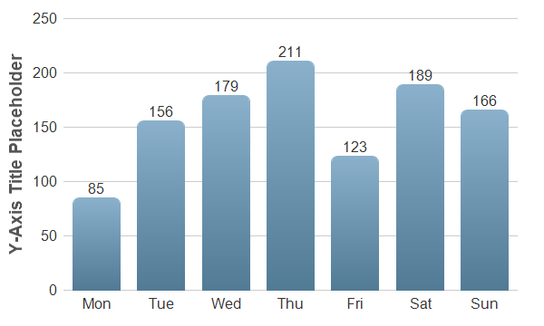

This example extends the
Simple Bar Chart (1) example by including bar labels on the bars, and decorating the bars with rounded corners and gradient shading.
The following is the command line version of the code in "cppdemo/barlabel". The MFC version of the code is in "mfcdemo/mfcdemo". The Qt Widgets version of the code is in "qtdemo/qtdemo". The QML/Qt Quick version of the code is in "qmldemo/qmldemo".
#include "chartdir.h"
int main(int argc, char *argv[])
{
// The data for the bar chart
double data[] = {85, 156, 179, 211, 123, 189, 166};
const int data_size = (int)(sizeof(data)/sizeof(*data));
// The labels for the bar chart
const char* labels[] = {"Mon", "Tue", "Wed", "Thu", "Fri", "Sat", "Sun"};
const int labels_size = (int)(sizeof(labels)/sizeof(*labels));
// Create a XYChart object of size 600 x 360 pixels
XYChart* c = new XYChart(600, 360);
// Set the plotarea at (70, 20) and of size 500 x 300 pixels, with transparent background and
// border and light grey (0xcccccc) horizontal grid lines
c->setPlotArea(70, 20, 500, 300, Chart::Transparent, -1, Chart::Transparent, 0xcccccc);
// Set the x and y axis stems to transparent and the label font to 12pt Arial
c->xAxis()->setColors(Chart::Transparent);
c->yAxis()->setColors(Chart::Transparent);
c->xAxis()->setLabelStyle("Arial", 12);
c->yAxis()->setLabelStyle("Arial", 12);
// Add a blue (0x6699bb) bar chart layer using the given data
BarLayer* layer = c->addBarLayer(DoubleArray(data, data_size), 0x6699bb);
// Use bar gradient lighting with the light intensity from 0.8 to 1.3
layer->setBorderColor(Chart::Transparent, Chart::barLighting(0.8, 1.3));
// Set rounded corners for bars
layer->setRoundedCorners();
// Display labela on top of bars using 12pt Arial font
layer->setAggregateLabelStyle("Arial", 12);
// Set the labels on the x axis.
c->xAxis()->setLabels(StringArray(labels, labels_size));
// For the automatic y-axis labels, set the minimum spacing to 40 pixels.
c->yAxis()->setTickDensity(40);
// Add a title to the y axis using dark grey (0x555555) 14pt Arial Bold font
c->yAxis()->setTitle("Y-Axis Title Placeholder", "Arial Bold", 14, 0x555555);
// Output the chart
c->makeChart("barlabel.png");
//free up resources
delete c;
return 0;
}
© 2023 Advanced Software Engineering Limited. All rights reserved.